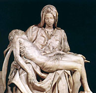
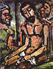
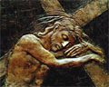
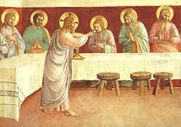

A uno le dan ganas de creer que el diluvio de anoche, justo cuando -por primera vez- se hacía el Via Crucis en las calles de Buenos Aires hacia la Plaza de Mayo, fue un castigo divino por haber afeado la liturgia del Viernes Santo con esa espantosa Oración por la patria.
Qué malo (y qué pueril) que es uno... ( y además, ignorante: Dios garantizó en el Génesis que el diluvio como instrumento de castigo quedaba abolido... no ?).
Otra cosa:
Al mediodía de ayer anduve buscando
alguno de esos simpáticos grupitos de
adolescentes de izquierda,
que siempre se ven frunciendo el ceño por los alrededores
de Plaza de Mayo, ... y nada.
Es claro, se han ido de vacaciones... fin de semana largo, hay que descansar.
Pero es una lástima, justo una vez que yo estaba interesado en unirme
a alguno de sus actos militantes...
|
Ahora, hermosa María, parecéis la verde zarza, que aunque el fuego os bajan muerto bien arde en vuestras entrañas. Recibidle, gran Señora, que de la sangrienta cama, Juan, Magdalena y José a vuestros brazos le pasan. En ellos estuvo niño, haciendo y diciendo gracias; las de su Padre tenía, que fue su misma palabra. Tomad esas manos frías, y diréis, viendo las palmas, que un hombre tan manirroto no es mucho si reinos daba. Tomad los pies y veréis que bien el mundo le paga treinta y tres años que anduvo solicitando su casa. Poned en vuestro regazo la cabeza soberana; veréis que el espejo vuestro ya no os alegra y retrata. Y si el costado miráis y aquella profunda llaga, Dios os dé paciencia, Virgen, porque consuelo no basta. |

Alma, por quien Dios ha muerto, y muerte de tanta infamia, mira a su madre divina y dile con tiernas ansias: Desnudo, roto y difunto os le vuelven, Virgen santa; naciendo, os faltaron paños; muriendo, mortaja os falta. Pidámosla de limosna, o entiérrele en pobres andas la santa misericordia, pues ella misma le mata. (Lope de Vega - frag.) |
{kind=link}
(Sí, sí... todo muy bien ... pero eso de manirroto .... Bueno, ya se sabe que los españoles de aquellos tiempos escribían lindo, pero a veces las metáforas y los conceptos se les iban en vicio...
De paso, aclaremos: el José que aparece nombrado es José de Arimatea.)
Así como se asombraron de él muchos —pues tan desfigurado estaba que no parecía hombre, su apariencia no era humana—
otro tanto se admirarán muchas naciones; ante él cerrarán los reyes la boca, pues lo que nunca se les contó verán, y lo que nunca oyeron conocerán.
¿Quién creyó nuestro anuncio?
Y el brazo de Yahveh ¿a quién se reveló?
Como un retoño creció ante él, como raíz de tierra seca.
No tenía
presencia ni belleza; le vimos, y no tenía aspecto que pudiésemos estimar.

Despreciable, desecho de hombre; varón de dolores y sabedor de sufrimientos;
como aquellos ante quienes nos cubrimos el rostro,
lo despreciamos y lo tuvimos por nada.
Y con todo, eran nuestras enfermedades las que él llevaba,
y nuestros dolores los que él asumía.
Y nosotros lo creímos castigado, herido de Dios y humillado.
Fue traspasado por nuestras rebeldías, molido por nuestras culpas. Sobre él cayó el castigo que nos trae la paz, y con sus llagas fuimos curados.
Todos errábamos como ovejas , cada uno seguiá su camino, y Yahveh descargó sobre él la culpa de todos nosotros.
Fue oprimido, y se humilló; no abrió la boca.
Como cordero llevado al matadero,
como oveja muda ante sus esquiliadores,
no abrió la boca.

Tras arresto y juicio fue arrebatado, y de los suyos,
¿quién se preocupó por su suerte?
Fue arrancado de la tierra de los vivos; por las rebeldías de su pueblo
fue golpeado;
y se puso su sepultura entre los malvados y con los ricos su tumba, por más que
no hizo atropello ni hubo engaño en su boca.
Mas quiso Yahveh quebrantarlo con dolencias.
Si se da a sí mismo en expiación,
verá descendencia, alargará sus días,
y la voluntad de Yahveh se cumplirá por su mano.
Por las fatigas de su alma, verá la luz y será saciado.
Por su padecimiento justificará mi Siervo a muchos
y las culpas de ellos asumirá.
Por eso le daré su parte entre los grandes, y con poderosos repartirá despojos;
ya que indefenso se entregó a la muerte y con los pecadores fue contado, cuando él
llevaba el pecado de muchos, e intercedía por los rebeldes.
(Isaías - Cap. 53 : "Canto del Siervo de Yahvé")
{kind=link}

Jueves Santo .
En la historia de la Pasión, corresponde al día de la Última Cena.
La Iglesia celebra el día de la institución del sacerdocio y de la Eucaristía.
Hoy Juan Pablo II publicó su nueva encíclica "Ecclesia de Eucharistia
", sobre la Eucaristía.
Marzo de 1941.
J. R. R. Tolkien (49 años; hace tres años ha comenzado la redacción de "El señor de los anillos", que pese a las presiones de los editores quedó abandonado durante un tiempo -cerca de Moria) escribe a su hijo Michael una larga e interesante (y paternal) carta sobre "el matrimonio y la cuestión sexual" —a comentar algún día—.
Importa hoy, Jueves Santo, su párrafo final:
-
Desde las tinieblas de mi vida, tan frustrada,
pongo ante ti lo único verdaderamente digno
de ser amado en el mundo: el Santísimo Sacramento...
Allí encontrarás romance, gloria, honor,
fidelidad, el verdadero camino a todos tus amores
terrenos, y más que eso: la muerte; mediante
la divina paradoja, esa que pone fin a la vida y exige
el abandono de todo, y que sin embargo es lo único
cuyo cuyo gusto (o pregusto) puede dar
sostén a lo que buscamos en nuestras relaciones
humanas (amor, fidelidad, alegría),
que puede darles esa complexión de realidad,
de eternidad, que el corazón de todos los hombres anhela...
Noviembre de 1963.
Michael le había escrito sobre su «fe debilitada»
y Tolkien (71 años) le contesta (entre otras cosas):
-
... La única cura para el debilitamiento de la fe es la Comunión.
Aunque siempre es el mismo, perfecto, completo, inviolable,
el Santísimo Sacramento no opera del todo y de una sola vez
en nosotros. Como el acto de fe, debe ser continuo,
y crecer con el ejercicio. [...]
A mí me convence el derecho de Pedro; mirando el mundo
a nuestro alrededor, no parece haber muchas dudas
(si asumimos que el Cristianismo es verdad) acerca
de cuál sea la Verdadera Iglesia, el templo
del Espíritu, agónico pero vivo, corrupto pero santo,
autorreformado y reestablecido.
Ahora, para mí, esa Iglesia de la cual el Papa es la cabeza
reconocida sobre la tierra tiene como principal
reclamo el de haber defendido siempre (como defiende
todavía) el Santísimo Sacramento; lo ha venerado
en grado sumo y lo ha puesto en primer lugar
—como Cristo evidentemente lo quiso.
Lo último que encomendó a Pedro fue "Alimenta
a mis ovejas", y dado que sus palabras siempre
deben entenderse en primer lugar literalmente,
asumo que se refieren, en primer lugar, al
Pan de Vida.
Los de encuentra.com tuvieron la idea (algo sorprendente - gratamente sorprendente) de meter entre el material para Semana Santa, este texto para el Viernes Santo:
Al pie de la Cruz, de las visiones de Ana Catalina Emmerick.
Es largo, pero se puede imprimir (y bajarlo a la Palm).
-
... El Viernes Santo, día de ayuno y penitencia recordaremos la pasión y la muerte de Jesús, absorbidos en la adoración de la Cruz. «Ecce lignum Crucis, in quo salus mundi pependit - He aquí el madero de la cruz del cual llegó la salvación del mundo». El Hijo de Dios sobre el Calvario cargó con nuestros pecados, ofreciéndose al Padre como víctima de expiación. De la Cruz, fuente de nuestra salvación, mana la nueva vida de los hijos de Dios.
El silencio del Sábado Santo, día cargado de espera y esperanza, sigue al drama del Viernes. Con María, la comunidad cristiana vigila en oración junto al sepulcro, esperando que se cumpla el acontecimiento glorioso de la Resurrección.
En la Noche Santa de Pascua todo se renueva en Cristo resucitado. De todos los rincones de la tierra subirá al cielo el cántico del Gloria y del Aleluya, mientras la luz rasgará las tinieblas de la noche. En el Domingo de Pascua exultaremos con el Resucitado, que nos hará desear la paz.
Preparémonos, queridos hermanos y hermanas, a celebrar dignamente estos días santos y a contemplar la obra maravillosa realizada por Dios en la humillación y en la exaltación de Cristo (Cf. Filipenses 2, 6-11). ...
P.S. Me señalaban recién que felisa se mandó con una explicación similar... bueno, no sé si muy similar, digamos que más en la onda de la chica porteña standard...
No está mal. Sólo objetaría lo del Sábado Santo, como un entretiempo; si vas a la misa de la Vigilia (Misa de Gloria, a la noche) sería más bien una especie de premier de la película que pasan el día siguiente. Y así, uno puede mirar con suficiencia a los que van a la misa del domingo: "Yo ya la vi"...
Yo tenía la idea de hacer una serie de 40 posts sobre Santa Teresita, uno por cada día de la Cuaresma. Ya estamos entrando al tiempo más grande del año cristiano, que trato de vivir intensamente (suena a publicidad de auto, o de desodorante... no? malditos publicistas); la liturgia de Semana Santa, para empezar, es hermosa... Bueh, cuestión que trataré de dedicarle poco tiempo al blog hasta la Pascua. Ni hablar de matarme para escribir las seis entregas que faltan en dos días; pero dado que no es falta de material, sino de tiempo, quedarán para después.
Menciono, de paso, que visitando el blog de Camassia
encuentro dos posts muy conectados con Teresa:
(si hay problemas con los links a los archivos,
buscar en la página principal; posts del 10 de abril y 15 de abril)
Una, sobre la justicia y misericordia (con link a otro blog) y las dificultades de conciliar ambas... (Teresa no sintió la necesidad, podría decirse ... en su relación personal con Dios, sólo lo veía como misericordia).
Dos, y más notable, esta reflexión sobre un aspecto de San Pablo: su insistencia en "ponerse de ejemplo" :
-
There's a touch of the egotism here that I noticed in Paul's letters: he likes to hold himself up as an example to follow. I think if I knew Paul back then I'd find it kind of irritating. Hey, I came here to know God, not become you, pal!
Más sobre esto la semana que viene.
Desesperando ya de lograr hacerme pensar, un lector me envía una pregunta modesta que apela a mi supuesta condición de "católico ilustrado". Lamentablemente, no es el caso; mi ignorancia sobre temas católicos es muchísimo más grande de lo que cualquier lector de este blog pueda sospechar. Educación laica y mediocre, (re)entré a la Iglesia a los 24 años con una formación excesivamente autodidacta y aislado de todo; para ese entonces, ni siquiera sabía lo que era el Concilio Vaticano II, por dar un ejemplo. Y no progresé mucho. En realidad, cualquier típico ateo culto que haya estudiado en un colegio católico tiene más conocimientos de cultura católica que yo.
Pero, si no sirvo como pensador ni como pozo de cultura católica, sí sirvo para buscar cosas en Google. En eso, tengo una habilidad casi proverbial, cuyas raíces pueden rastrearse en los tiempos en que, alumno de la primaria, era el primero en encontrar palabras en el diccionario (tomá!).
Vamos pues a la pregunta, y a lo que encontré.
Se trata de una página (y de un sitio)
interesante del amigo Alejandro, que contiene
poesías provenientes de la tradición oral, junto con historias,
leyendas populares, dichos, etc.
Una de ellas, el
Romance de Juan y Adela parece ser
«resultado de la tradicionalización (sic) de un poema
de autor conocido, 'Lux Aeterna', de Juan Menéndez Pidal. ».
La pregunta es sobre el origen de ese título (Luz eterna), que suena a
una especie de fórmula o título standard de algún rezo
de difuntos o algo similar.
Google responde:
En efecto, se trata del título de una de las partes
de la misa de difuntos (Requiem) según el rito antiguo
de la iglesia católica.
Acá
explica el asunto en general:
-
Todas las misas tienen una serie de partes comunes que son cantadas. En el caso del réquiem se omiten algunas como el Gloria, el Credo o el Aleluya y a cambio pueden aparecer otras diferentes como el Dies Irae (Día de la Ira), Lux Aeterna (Luz Eterna) o Libera me, Domine (Libérame, Señor),
-
Lux aeterna luceat eis, Domine .
Cum sanctis tuis in aeternum,
quia pius es.
Requiem aeterman dona eis Domine
et lux perpetua luceat eis.
Brille la luz eterna ante sus ojos, Señor,
junto a los Santos y para toda la eternidad,
por tu misericordia.
Dales, Señor, el descanso eterno,
y brille ante sus ojos la luz perpetua.
Y acá hay una versión para escuchar, en canto gregoriano (MP3, 715 Kb)
«La poética del Alzamiento», por Aquilino Duque. Sobre la España del '30; poesía, política (y alguito de religión).
Desconozco al autor, y el artículo lo leí a vuelo de pájaro, nomás. No sé si es recomendable. Pero, alguien que mete a Simone Weil, Bernanos y Unamuno en una misma frase, no puede menos que interesarme.
PD: Advertencia a los chicos de estómago delicado: por lo que ahora veo, el sitio es falangista (!). El lector sabrá mantener distancia... o pasar de largo, si prefiere.
Sta. Teresita:
< 34/40
Maestra de novicias
Nunca fue cargo fácil el de maestra de novicias. También Teresa
obtuvo sus disgustos, antipatías y fracasos. Sin embargo, al
final siempre terminó ganándose a sus corderitos:
-
A los ojos de las criaturas,
todo me sale bien... A veces, sin embargo, me viene un deseo muy grande de oír
otra cosa que alabanzas ...
No puedo decir que Jesús me haga andar exteriormente por el camino de la humillación. No. Se contenta con humillarme en el fondo de mi alma...
comprendo la conducta de Dios y de los superiores. En efecto, si yo pasara a los ojos de la comunidad por una religiosa incapaz, sin inteligencia ni juicio, sería imposible a V. R., Madre mía, hacerse ayudar por mí. He aquí por qué el divino Maestro ha echado un velo sobre todos mis defectos interiores y exteriores
[...]
-
Ya sé, Madre mía, que vuestros corderuelos me encuentran severa...
pero que digan lo
que quieran; en el fondo, se dan cuenta de que las quiero con amor verdadero...
Yo estoy dispuesta a dar mi vida por ellas y mi cariño es tan puro que ni siquiera deseo que lo conozcan.
[...]
Dios me ha concedido la gracia de no temer el combate. Tengo que cumplir con mi
deber al precio que sea.
Más de una vez me han dicho: «Si quieres conseguir
algo de mí, tendrás que ganarme por el camino de la dulzura; por el de la
fuerza no conseguirás nada».
Pero yo sé que nadie es buen juez en propia causa, y que un
niño al que el médico somete a una operación dolorosa no dejará de chillar y de
decir que es peor el remedio que la enfermedad; sin embargo, cuando a los pocos
días se encuentre curado, se sentirá feliz de poder jugar y correr.
Lo mismo ocurre con las almas. No tardan en reconocer que, en ocasiones, un poco de
acíbar es preferible al azúcar, y no tienen reparo en confesarlo.
A veces no puedo dejar de sonreír en mi interior al ver qué cambio se opera de un
día para otro. ¡Parece cosa de magia...! Vienen a decirme:
«Tuviste razón ayer al
ser tan dura. En un primer momento me sublevó lo que me dijiste, pero luego fui
recordándolo todo y vi que tenías razón... Ya ves, cuando me fui de tu lado, pensé
que todo había terminado, y me decía: Iré a ver a nuestra Madre y le diré que ya no
volveré más con sor Teresa del Niño Jesús. Pero me di cuenta de que era el demonio
quien me inspiraba esas cosas. Además, me pareció que tú estabas rezando por mí...»
[...]
-
¡.. cómo desea "el granito de arena" ser reducido a la nada,
ser ignorado por todas las criaturas! El pobrecito no
desea ya nada, nada más que el olvido...;
ni siquiera el desprecio o las injurias, pues eso sería demasiado
glorioso para un grano de arena. Si lo
despreciasen, tendrían que verlo. ¡Pero el olvido...!
Sí, deseo ser olvidada,
y no sólo por las criaturas sino también por mí misma
(carta a Paulina, mayo 1890)
Porque su cargo docente le exigió (y de esto ella misma fue plenamente conciente al final) una especie de despersonalización, transformarse en puro instrumento en las manos de Dios (el pincelito), quemar todo lo subjetivo como combustible de la santidad/sabiduría objetiva que el rol docente exige.
-
De lejos parece fácil hacer bien a las almas, hacerles amar más a Dios y
modelarlas conforme a las miras y pensamientos de Dios. De cerca, por el
contrario, se da uno cuenta de que
el hacer bien es cosa tan imposible, sin la ayuda divina,
como volver durante la noche el sol a nuestro hemisferio.
Entonces se cae en la cuenta de que hay que olvidar absolutamente los propios gustos, las ideas personales y guiar las almas, no por la propia senda, no por caminos nuestros, sino por el camino particular que Jesús les señala.
Escuchado recién, en el viaje en subte: lo dijo -entre varias otras exhortaciones en tonos muy festivos- un vendedor ambulante que ofrecia los fabulosos "lápices mágicos de Piñón Fijo" (un personaje infantil, especie de payaso de moda en estos pagos).
Venía largando frases sobre "...dar una alegría a los más chicos...", etc.
Perfecto.
Pero de pronto, acaso interferencia con discursos de otras ventas, tiró esto:
- «Para quedar bien con el pequeñito de la casa!»
Blandings es un grupo de discusión -requiere inscripción, libre- sobre P. G. Wodehouse, en inglés. Dedican un mes a un libro. Y tienen un volumen de mensajes muy alto (más de treinta por día) y mucho contenido archivado con análisis de los distintos libros.
Sólo para enfermos (como uno).
-
Many chaps might have resented his tone. I did myself, as a matter of fact.
But you know how it is. There are some fellows you are right on your toes
to tick off when they call you a miserable worm, others not quite so much.
The Code of the Woosters, ch 4
Me escribe uno de esos amigos que uno hace en internet, que a veces cae a leer este blog, literato, de izquierda, ateo (y con cierta militancia anticatólica, al modo español). Entre otras cosas, alguna de la cuales retomaré quizás, me/se pregunta si
« hemos de tomar lo que la Iglesia católica ha hecho para parar esta guerra como una muestra práctica de hasta donde llega su capacidad efectiva para hacer el bien en este mundo ».
Precioso sarcasmo, sobre todo para este comienzo
de la Semana Santa.
Ayer, domingo de Ramos, escuchamos a modo de anticipio
el relato completo de la Pasión según San Marcos.
-
29 Y los que pasaban por allí le insultaban, meneando la cabeza y diciendo: «¡Eh, tú!, que destruyes el Santuario y lo levantas en tres días,
30 ¡sálvate a ti mismo bajando de la cruz!»
31 Igualmente los sumos sacerdotes se burlaban entre ellos junto con los escribas diciendo: «A otros salvó y a sí mismo no puede salvarse.
32 ¡El Cristo, el Rey de Israel!, que baje ahora de la cruz, para que lo veamos y creamos.»
Y el pueblo lo quiere hacer rey... cuando multiplica los panes.
Sí, si bajás de la cruz (si terminás con el hambre, si
acabás con las injusticias, si curás todas las enfermedades
y dolores, si nos liberás de Roma, si
te da el cuero para torcerle el brazo al imperio,
si nos demostrás que tenés el poder
de hacer el mundo bueno que
todos queremos) creeremos en vos.
Si no, no nos servís; esperaremos a otro.
Mención aparte merecería ese
clericalismo de los ateos
(hijo en parte del clericalismo de algunos ambientes
católicos) que
confunden a la Iglesia con el Vaticano,
y en mejor de los casos a los obispos
y demás clérigos. Pero tampoco
puede pedirse a los materialistas
que usen otras categorías que las
políticas-institucionales, y
la eficacia medida en ese plano.
En eso, izquierda y derecha (y derechas)
terminan coincidiendo.
Todos, adoradores de la fuerza.
Nota a Alfredo Abalos (buen intérprete de folklore) en Clarín.
«Se queja de la situación nacional...» , dice. El título de la nota es: "Entre Gieco y Heredia". La situación nacional será todo lo mala que quieras; pero nada parece peor que estar entre Leon Gieco y Victor Heredia... Será una queja "sublimada" ?...